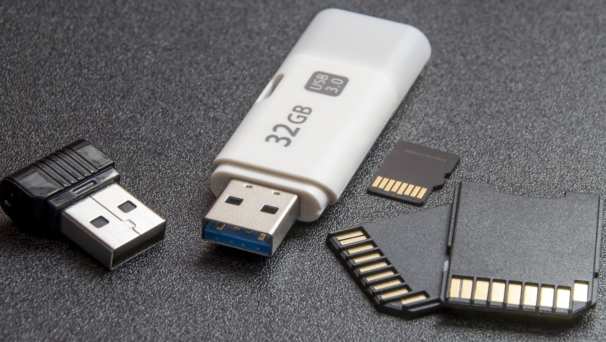
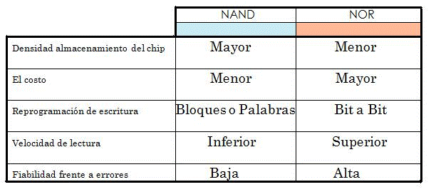

"Si no hay dudas, no hay progreso"
Charles Darwing
INTRODUCCIÓN
He iniciado asi mi página, con la cita de Darwing, la creación de las memorias flash viene de ese concepto, su creador dudaba de que el predecesor de las memorias flash (EEPROM) fuese la manera mas eficiente o perfecta del dispositivo y investigo como mejorar su funcionamiento.
La memoria flash es una tecnología que permite la lectura y escritura de múltiples posiciones de la memoria en la misma operación mediante impulsos eléctricos (tecnología flash) la cual ofrece unas velocidades de funcionamiento superiores a su predecesor (EEPROM). Están orientadas a realizar el almacenamiento de grandes cantidades de datos, que sean mas faciles de transportar y accesibles.
Aunque las caracteristicas que hacen destacar a las memorias flash sobre EEPROM son:
1. Gran resistencia a los golpes
2. Muy silencioso
3. Bajo consumo
4. Pequeño tamaño
5. Muy ligero y versátil
6. Elevada resistencia térmica
Esta tecnología la podemos encontrar en Memorias USB, unidades de estado solido y BIOS entre otros.
Las aplicaciones más habituales son:
--> Las memorias USB que, además del almacenamiento, puede incluir otros servicios como, lector de huella digital, radio FM, grabación de voz y, sobre todo, como reproductores portátiles de MP3 y otros formatos de audio.
Las PC Card (descontinuado).
--> Las tarjetas de memoria flash que son usadas para almacenar fotos y videos en las cámaras digitales.
-->También son comunes en los teléfonos móviles y tabletas para ampliar la capacidad de almacenamiento.
Existen varios estándares de encapsulados promocionados y fabricados por la mayoría de las multinacionales dedicadas a la producción de hardware. Los más comunes hoy en día son Secure Digital, Compact Flash y Memory Stick.
TIPOS
Los distintos componentes que encontramos con esta tecnología son:
La propia memoria flash tiene 2 tipos distintos de funcionamiento : NOR y NAND
FUNCIONAMIENTO
Dependiendo de si la celda está a 1 ó a 0, el campo eléctrico de la celda existe o no. Cuando se lee la celda poniendo un determinado voltaje en CG, la corriente eléctrica fluye o no en función del voltaje almacenado en la celda. En los dispositivos de celda multi-nivel, se detecta la intensidad de la corriente para controlar el número de electrones almacenados en FG e interpretarlos adecuadamente. Para programar una celda de tipo NOR se permite el paso de la corriente desde la terminal fuente al terminal sumidero, entonces se coloca en CG un voltaje alto para absorber los electrones y retenerlos en el campo eléctrico que genera.
→ Memorias flash de tipo NOR :
Dependiendo de si la celda está a 1 ó a 0, el campo eléctrico de la celda existe o no. Cuando se lee la celda poniendo un determinado voltaje en CG, la corriente eléctrica fluye o no en función del voltaje almacenado en la celda. En los dispositivos de celda multi-nivel, se detecta la intensidad de la corriente para controlar el número de electrones almacenados en FG e interpretarlos adecuadamente. Para programar una celda de tipo NOR se permite el paso de la corriente desde la terminal fuente al terminal sumidero, entonces se coloca en CG un voltaje alto para absorber los electrones y retenerlos en el campo eléctrico que genera.(Si pone el raton en la imagen la podra ver la más grande)
→ Memorias flash de tipo NAND :
Las memorias basadas en NAND tienen, además de la evidente base en otro tipo de puertas, un costo bastante inferior, unas diez veces mayor resistencia a las operaciones y sólo permiten acceso secuencial , frente a las memorias flash basadas en NOR que permiten lectura de acceso aleatorio. Las populares memorias USB o también llamadas Pendrives, utilizan memorias flash de tipo NAND.(Si pone el raton en la imagen la podra ver la más grande)
Esta tabla, indica de manera más gráfica las diferencias entre los 2 modelos
INSTALACIÓN
Bueno en este caso, la mayoría de ordenadores tienen receptores para este tipo de dispositivos. Para utilizar estos dispositivos necesitamos ( dependiendo del tipo ): una entrada de puerto usb o un lector de tarjetas ( aunque algunas como la smart media ya están desfasadas y en desuso )
MARCAS
Algunas marcas son:

DONDE
Y
PRECIOS
Se pueden encontrar tanto en tiendas físicas como en tiendas online, siendo estas últimas más populares y en las que más posibilidades tenemos de encontrar el producto que deseamos. Les dejamos una lista de los productos mencionados con enlaces a páginas de confianza de compra de articulos vía online
--> Tarjeta SD

--> xD Picture Card
--> MemoryStick
--> Compact Flash